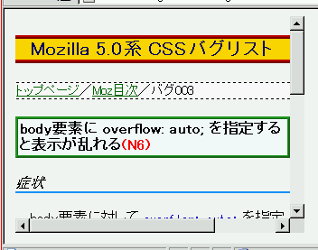
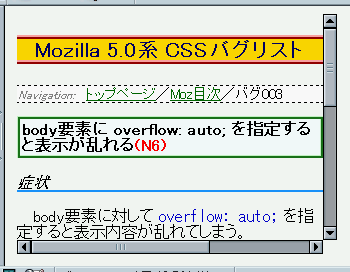

body要素に対して overflow: auto; を指定すると表示内容が乱れてしまう。
<body style="width:320px; height:240px; overflow:auto;">
表示結果はスクリーンショットにしています。
WinIE6.0での表示（標準モード）
N6.2.3での表示（標準モード）
Netscape7でこのバグに似た症状が発生することが確認されています。Mozバグ055を参照してください。
N6.2.3及びMoz1.0で特に問題は見られませんでした。
【CSS】-Mozilla6
body要素に overflow: scroll ってやると
凄いことになるけど仕様かな？